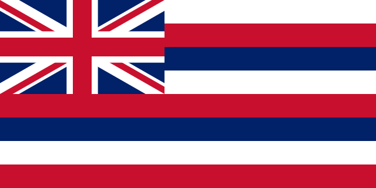
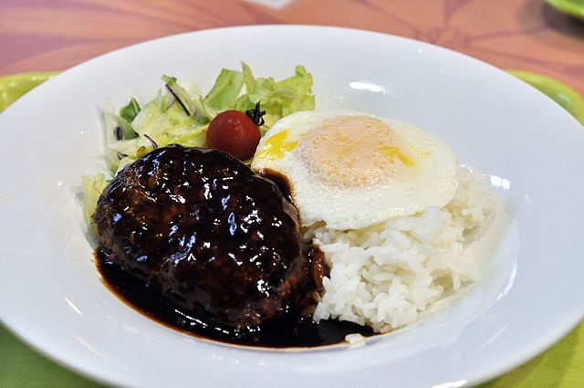
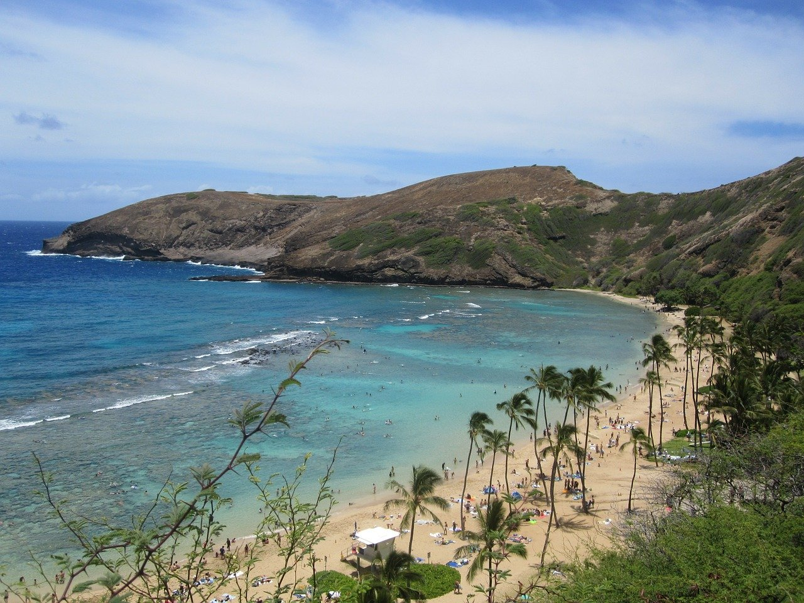
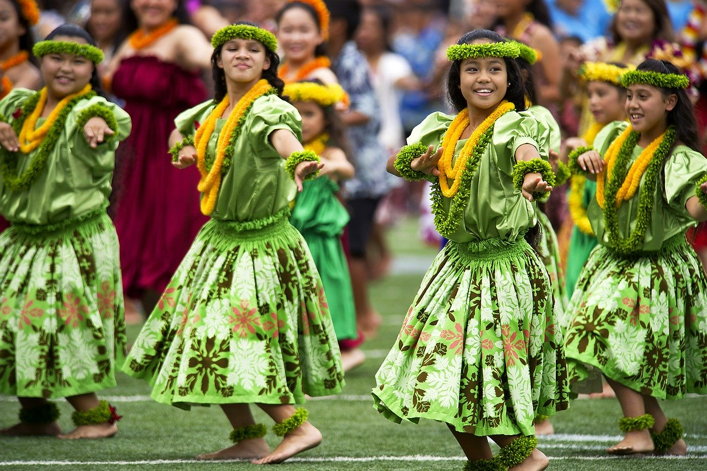

Hawaï

Etymologie
Hawaï est le 50ème et dernier Etat des Etats-Unis, cependant cette appartenance ne date que de 1959, et la culture hawaïenne est propre à cet archipel de 137 îles. Et bien qu'il fasse parti des Etats-Unis, sa situation géographique, dans l'Océan Pacifique, en fait bel et bien un territoire de l'Océanie. Le nom "Hawaï" provient du mot Owhyhee, en hawaïen, qui a été par la suite adapté en Anglais sous le nom d'Hawaii (qui peut s'écrire aussi en Français).
Gastronomie
La gastronomie hawaïenne a subi les influences des peuples européens, polynésiens, asiatiques et autochtones de l'archipel. Aujourd'hui, un des plats les plus populaires à Hawaï est le loco moco : il s'agit de riz blanc, d'un steak haché et d'un oeuf au plat servis avec du jus de viande. L'origine de ce plat remonte à un restaurant hawaïen, en 1949. Un groupe de garçons du club de sport local voulait manger à ce restaurant mais n'avait pas beaucoup d'argent, ils demandèrent alors ce plat (sans l'oeuf initialement), qui leur a été vendu 25 cents. L'un des garçons était surnommé "Crazy" par sa façon de jouer au football, traduit en espagnol par "Loco". Moco n'a pas de signification autre que la rime et a donné le nom à ce plat, qui est ensuite devenu populaire au sein de ce club de sport, pour finalement acquérir une notoriété nationale.


A voir
Hawaï est principalemen connu pour deux choses : ses plages paradisiaques et ses volcans, dont certains sont toujours en activité. On peut regrouper les deux avec Hanauma : cete baie se situe dans un ancien cône volcanique, qui attire autant les surfeurs que les plongeurs, qui peuvent admirer une faune et une flore marine très riche. Hana signifie en Hawaïen "baie", et la deuxième partie serait un dérivé du mot hawaïen signifiant "courbe", en référence à la forme de la baie. A l'origine un cratère volcanique vieux d'environ 32 000 ans, les fentes créées dans le cratère par l'activité volcanique l'a peu à peu ouvert sur la mer, et le contact entre l'eau et le magma a petit à petit formé la baie par l'érosion.
Oeuvres
Hawaï est connu pour son sport traditionnel, le surf, sa musique typique jouée au ukulélé, mais surtout pour sa danse caractéristique : le hula. Traditionnellement, cette danse accompagne un chant, le mele, et le hula permet de "commenter" ce chant. Dans sa version ancienne, il est accompagné d'instruments typiques hawaïens, comme le ipu (un tambour) ou le pūʻili (un instrument en bambou). Il s'agit d'une danse complexe, composé de mouvements de bras très précis qui possèdent chacun une signification particulière en lien avec la nature. A l'origine, les légendes racontent que le hula a été réalisé pour la première fois par les dieux hawaïens, bien que plusieurs versions existent. Aujourd'hui, le hula peut être dansé pour célébrer ces dieux, pour des cérémonies officielles, comme des visites de chefs d'Etats, ou bien juste en famille pour se divertir.
